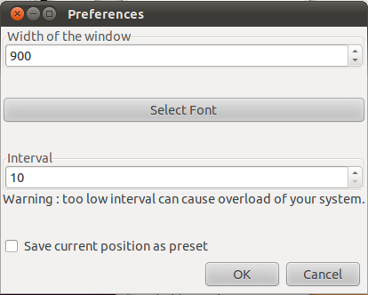

TUTORIAL : HOW TO USE Spectrum3D?
SPECTRUM 3D: 3D AUDIO SPECTRUM ANALYSER IN REAL TIME
Spectrum 3D dispays a 3D audio spectrogram in real time; the source can
be either the microphone or an audio file or optionally jack
(jack-audio-connection-kit). Optionally, it supports multitouch
gestures from touscreen and touchpad. Optionally also, Gstreamer input
can be run in realtime even if Jack is not used. It is build with the
Gstreamer, SDL, OpenGl, Gtk and uTouch-Geis free libraries and is under
GPL license.
If you want realtime and multitouch support, you should read the notes
at the bottom of the document. There is also video tutorial.
Plan:
- How to install Spectrum3d?
- How to use Spectrum3d?
- Important notes about RealTime mode
- Multitouch support in Spectrum3d
- More information
1. How to install Spectrum3d?
1. Install dependencies :
All dependencies are available in the Ubuntu repositories.
For Ubuntu 10.10 and 11.04 :
- gcc, pkg-config;
- libgtk+-2.0-dev;
- lidsdl1.2-dev and libsdl-ttf2.0-dev;
- libgstreamer0.10-dev;
- gstreamer0.10-plugins-bad,
gstreamer0.10-plugins-bad-multiverse, gstreamer0.10-plugins-ugly et
gstreamer0.10-plugins-ugly-multiverse (for reading files such as mp3);
For JACK support :
- libjack-dev (for jack1) or libjack-jackd2-dev for jack2;
For multitouch support (touchscreen and for touchpad in Natty):
- libutouch-geis-dev in Natty; in
Maverick, you have to install utouch-geis from uTouch website
(https://launchpad.net/canonical-multitouch/utouch-geis) since we use
here the Geis2 API and Ubuntu maverick provides the Geis1 API in the
repositories.
For the other distributions than Ubuntu, the dependencies should be very similar. uTouch-Geis is beeing ported in other distributions such as Gentoo or Fedora.
2. Compile and install :
1) in a terminal, go to the directory where the sources are;
for example, if the sources are in the '/home/victor' directory :
cd /home/victor/spectrum3d-0.2-2
2) type :
./configure
add the options : --enable-jack if you want JACK support, --enable-realtime if you want realtime support when you don't use jack, --enable-geis
if you want multitouch support (for touchscreen or multitouch
touchpad). For example, if you want the 3 options enabled (Jack
support, RealTime without Jack and Multitouch support), you'll have to
type :
./configure --enable-jack --enable-realtime --enable-multitouch
It doesn't matter whiwh argument you put first.
3) type :
make
4) type :
sudo make install (the password will be necessary)
2. How to use Spectrum3d?
Launch Spectrum3d from the Menu->Applications->Audio
& Video, or type in a terminal :
spectrum3d
In case of problems, run it in a terminal for debugging purpose.
At start you'll see this :
Source can be Microphone ("Mic"), audio file or Jack input (this option
doesn't appear if you din't enable jack support at compilation). If you
play an audio file, you can seek forward or backward (5 seconds by 5
seconds) while it is playing. Selection of multiple audio files is possible.
Once you click on the 'Play/Pause' button, you'll have a new window display the the 3D spectrum :
The X axis represents the frequencies; the Y axis
represents the amplitude of each frequency; the Z axis reprenets the
time.
The default range of analysed frequencies is
from 0 to 6000 Hz, but you can adjust it (possible
ranges are 1000, 2000, 4000, 6000, 10000 and 20000 Hz). The display of
freqnecies starts at 0 by default but you change it (0 to 4000 Hz,
increasing
by steps of 500). You can also change the
speed of the display (6 differents speeds).
You can choose to display or not the lines of the scale as well as the
numbers of the scale by checking or not the apropriate check boxes.
Also you can display vertical panels that separate the display into
regions. You can chose the height of those panels with the
'Panel height' scale.
Now that you have a 3D display, you may want to
change the perspective, or the zoom, either in the playing state (when
the display is ever changing) or in
the paused state (when the display is frozen). You can change the
perspective of the view in any direction you want,
either by rotating the display around the X, Y or Z axis, or by
translating it along the 3 axes. You can also change the displaying of
the amplitude of the sound with the 'Gain' scale. This can be done if
Spectrum3d is in the playing state or in
the paused state. Note that you can also
change the range of the zoom and the first diplayed value while
Spectrum3d is paused.
The pictures below show the same sound while the playing has been paused, from several perspectives :

This can be done either by keyboard commands, or a
combination of keyboard commands and mouse movements, or gestures on
the touchscreen or touchpad. This is summarized in the windows from the
'Help' menu :
The 'Depth' scale allows to show more frame along the Z axis. The
display can then 'extend' in depth. If you set 'Depth' to 0 and click
on the 'Front View', you'll have front view of a single frame (the
first one).

Preferences
The 'Preferences' is located at 'Menu->Edit' :

This windows allows :
- to change the width of the window (700 to 1200 pixels);
- to select the font to be used;
- to change the time interval betwen two analysis frames;
- to save the current coordinates as the coordinates that will be used when the 'Preset' button will be clicked.
3. Important notes about RealTime mode
RealTime mode will allow Spectrum3d to have priority on other running
processes, in order to not be slowed down by them. In any case, it
won't decrease the amount of CPU and GPU ressources needed to perform
the task.
IMPORTANT WARNING : If you enable RealTime mode and if you don't do the following, you'll have to run Spectrum3d as root.
Edit audio.conf file and make yourself a member of 'audio' group
If you want to take advantage of this you should edit or create an '/etc/security/limits.d/audio.conf' file :
sudo gedit /etc/security/limits.d/audio.conf
and put this inside :
@audio - rtprio 95
@audio - memlock unlimited
then you should add yourself as a member of the 'audio' group :
- either go in System->Preferences->Users and Groups->Manage Groups, then select the 'audio' group, click on 'Properties' and add yourself;
- or type in a terminal : sudo adduser ${LOGNAME} audio
then reboot.
IMPORTANT WARNING : If you enable RealTime mode and if you don't do this, you'll have to run Spectrum3d as root :
sudo spectrum3d
How to check that you are using realtime policy?
If realtime mode is chosen, gstreamer will play the sound with the RR
('Round Robin') policy with a priority of 50. You can check that the RR
policy is used by typing in a terminal :
ps -cLe
while Spectrum3d is playing; you'll see in the output something like this :
3119 3119 TS 19 pts/0 00:00:01 spectrum3d
3119 3120 TS 19 pts/0 00:00:00 threaded-ml
3119 3121 TS 19 pts/0 00:00:00 threaded-ml
3119 3123 TS 19 pts/0 00:00:00 task0
3119 3124 TS 19 pts/0 00:00:00 spectrum3d
3119 3125 RR 90 pts/0 00:00:02 alsasrc:src
The thread called "alsasrc:src" is running with the RR policy ('RR' in the 3d column).
What about Jack?
If Jack is run in realtime mode (which has to be configured in Jack),
all its clients are run in realtime mode also; there is nothing more to
be done here (If Spectrum3d is run with Jack, Spectrum3d is a cient of
Jack).
4. Multitouch support for Spectrum3d
Multitouch support in Spectrum3d is still experimental for now. It is provided by the uTouch-geis API (Geis2).
Where to get general information about multitouch?
For general information about multitouch in Ubuntu, you can refer to : https://wiki.ubuntu.com/Multitouch .
How to install it?
It is available from Natty's repositories. For Maverick, it has to be
installed from the uTouch-geis website(the libutouch-geis-dev in the
Maverick's repositories is the Geis1 API and we are using Geis2 here).
A convenient way to do that on Maverick is :
- first uninstall libutouch-geis-dev and libutouch-geis if you have them installed;
- type in a terminal : sudo apt-get build-dep
libutouch-geis-dev (this will get all the needed dependencied to
build Geis2);
- then download the source package from uTouch-Geis website (https://launchpad.net/canonical-multitouch/utouch-geis)
and follow the instruction from the INSTALL file; steps should include
go in the source package directory, then ./configure, make, make
install.
- another convenient way to install it 5instead of
compiling it from sources) is to get the deb packages for Natty from
the packages.ubuntu.com : install first libutouch-geis1 then libutouch-geis-dev .
How is it implemented in Spectrum3d?
------------------------------------
For now, the whole screen receives fingers input for Spectrum3d while
Spectrum3d is running (input is not limited to the Spectrum3d window).
On the other hand, when Sprectrum3d is running, the mouse pointer
cannot be used from the touchpoint on the screen, but the mouse pointer
is still drived by the mouse. This behaviour could be the same in
Natty, if you have a touchpad that supports multitouch : the touchpad
only receives input as multitouch gestures, and you cannot use it
anymore to drive the mouse as long as Spectrum 3d is running.
Only one and two fingers gestures have been implemented untill now
since most of the touchscreen supports only 2 fingers gestures. On the
other hand, as gestures can be used at a system wide level, it seems
that 2 fingers gestures are better application-specific, while 3 or 4
fingers gestures apply to window or system management.
A possible future alternative : Ginn
------------------------------------
If you don't want to use uTouch-geis, it should be possible to use the excellent 'Ginn' software (https://launchpad.net/canonical-multitouch/ginn)
that allows to "inject" gestures without installing the geis API.
However, since Spectrum3d uses SDL, Ginn cannot yet "inject" gestures
in such kind of windows, but the developpers are planning to do it.
When it will be possible, Ginn will have to be started as root.
5. More information
View a short video demo
Or contact me at :
nadaeck (at) hotmail (dot) com